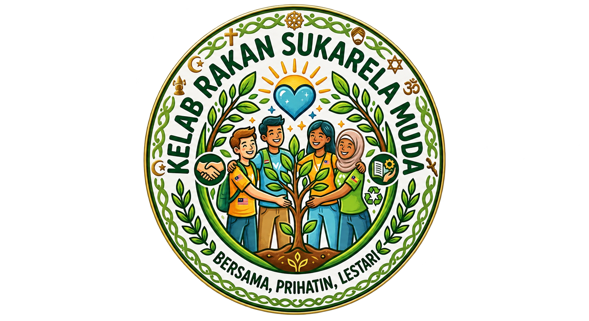

Kelab Rakan Sukarela MudaMembina generasi prihatin dan berjiwa murni merentas seluruh Malaysia
Kelab Rakan Sukarela Muda ditubuhkan sebagai satu platform rasmi untuk menyatukan individu berumur 15 hingga 50 tahun yang bersemangat dalam melakukan aktiviti kebajikan dan kemasyarakatan. Bergerak secara aktif di seluruh 14 buah negeri di Malaysia, kelab ini memberi fokus kepada pembangunan sahsiah, perpaduan komuniti, dan bantuan kemanusiaan secara berterusan.
Menjadi platform gerakan sukarelawan terunggul, paling inklusif, dan berimpak tinggi di Malaysia dalam melahirkan komuniti yang prihatin dan bersatu padu.
1. Memupuk nilai prihatin dan kesukarelawanan dalam kalangan pelbagai lapisan masyarakat.
2. Menyediakan saluran kebajikan yang telus untuk membantu golongan yang memerlukan.
3. Membina sahsiah dan kepimpinan positif melalui penglibatan aktiviti komuniti.
Fokus utama perkhidmatan dan sumbangan sukarelawan kami
Pembersihan kawasan awam, kempen kitar semula, dan penanaman pokok untuk kelestarian alam.
Sumbangan barangan asas, kelas bimbingan, serta lawatan kasih sayang ke rumah kebajikan.
Acara jualan amal dan kempen kutipan dana khas bagi menyokong projek kesihatan dan pendidikan.
Misi bantuan kecemasan, pengagihan bekalan makanan, dan khidmat sokongan tenaga kerja.
Berkhidmat di 14 buah negeri untuk memastikan bantuan sampai ke segenap lapisan masyarakat
Barisan Kepimpinan Rasmi Kelab Rakan Sukarela Muda
Ahmad Danial Bin Ridzuan
Noor Azimah Binti Mohamad
Khayra Adila Binti Zainal
Muhammad Amirul Bin Azman
Nur Farzana Binti Ismail
Luqman Hakim Bin Rosli
Muhammad Aiman Bin Zulkifli
Anis Sofea Binti Khairul
Perlis, Kedah, Penang, Perak
Selangor, KL, N.Sembilan
Melaka, Johor
Pahang, Terengganu, Kelantan, Sabah, Sarawak